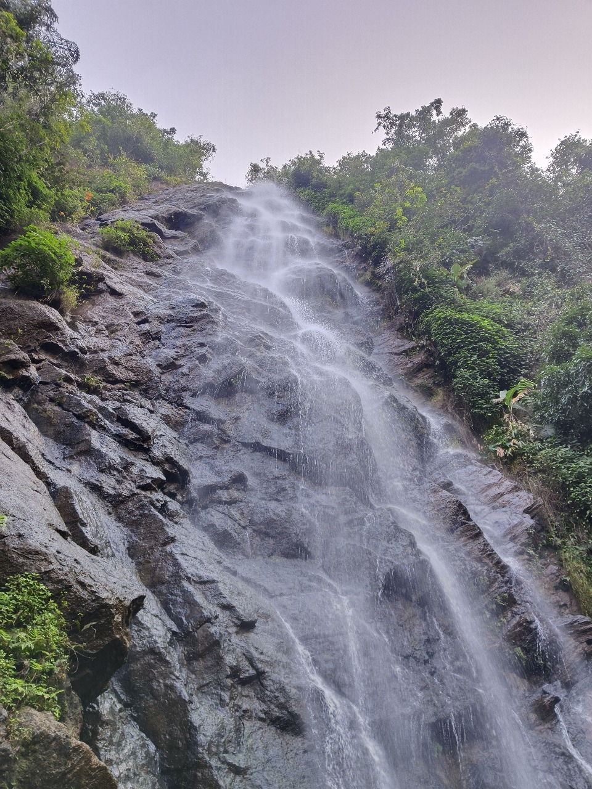

The Taj Mahal is a stunning white marble mausoleum in Agra, India, built by Emperor Shah Jahan in memory of his wife Mumtaz Mahal. Known for its exquisite architecture and intricate carvings, it is a symbol of eternal love and a UNESCO World Heritage site.
Charminar
The Charminar is a historic monument in Hyderabad, India, built in 1591 by Sultan Muhammad Quli Qutb Shah. It features four grand arches and is an iconic symbol of the city's rich culture and heritage.

Araku
Araku is a scenic valley nestled in the Eastern Ghats of Andhra Pradesh, known for its lush coffee plantations and tribal culture. Surrounded by misty hills and waterfalls, it's a serene getaway rich in natural beauty and heritage.
Mysore Palace
Mysore Palace is a stunning example of Indo-Saracenic architecture, blending Hindu, Muslim, Rajput, and Gothic styles. Located in Karnataka, it is renowned for its grandeur, intricate interiors, and vibrant Dussehra celebrations.